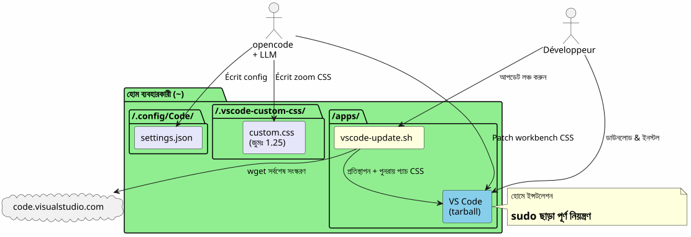
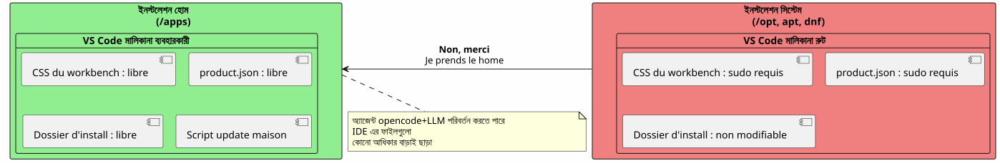
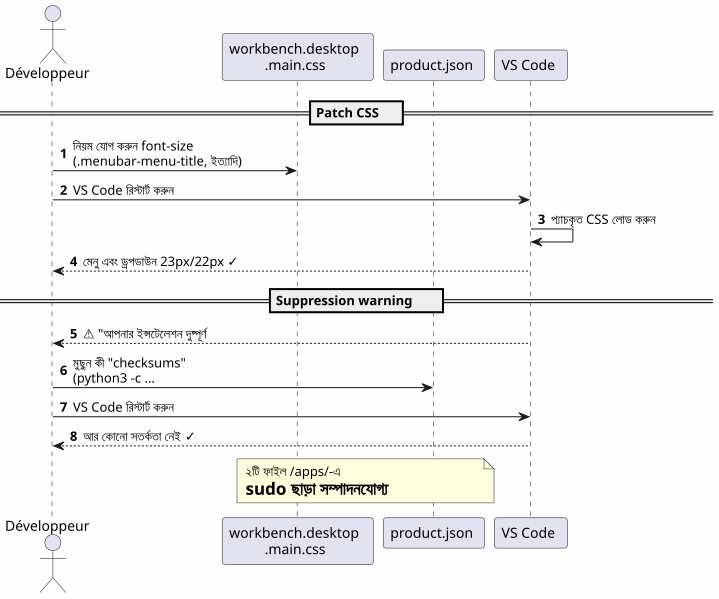
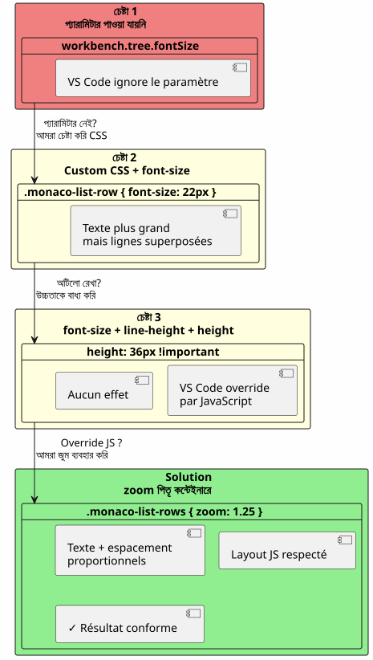
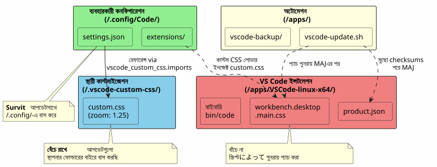
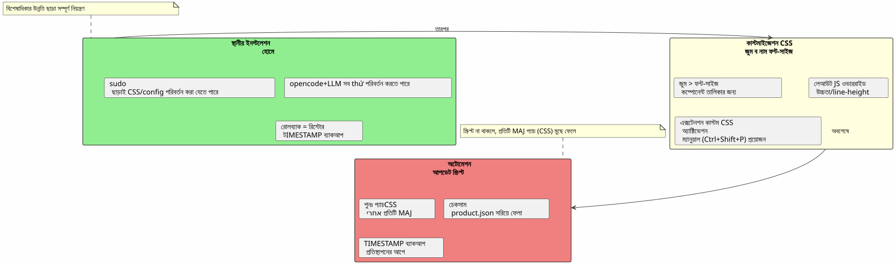

বিশুয়াল স্ট্যुडিও কোড হোমে : স্থানীয় ইন্সটলেশন এবং sudo ব্যবহার না করে ফন্ট কাস্টমাইজেশন
প্রকাশিত: 17 April 2026
কেন ইন্সটল করা VS Code মাঝে`/opt` ou via apt`When you can place it in your home and turn your IDE into a playground without ever typing any key.`sudo? এখানে একটি স্থানীয় ইন্সটলের কাহিনি এবং মেনু ও ফাইল এক্সপ্লোরারের ফন্ট বাড়ানোর জন্য একটি আক্রমণাত্মক লড়াই অনুসারে।
পথের ওভারভিউ

কেন: VS Code হোমে
সিস্টেম ইনস্টলেশনের সমস্যা
VS Code ইন্সটল করা হয়েছে মাধ্যমে`apt`, dnf`অথবা মধ্য/opt`এটিই অ্যাপ্লিকেশনের ফাইলগুলো রুট অনুমোদনের পিছনে লক করা হয়। নেটিভ CSS এর যেকোনো পরিবর্তন,product.json`বা ইনস্টলেশন ফোল্ডার প্রয়োজন`sudo.
ক</tool_call>, যখন আমরা ব্যবহার করিopencode(CLI টুল ব্যবহার করে একটি LLM তার কোডে চালানোর জন্য), এজেন্টকে সক্ষম হওয়ার প্রয়োজন :
-
কনফিগারেশন ফাইলে লিখুন`~/.config/Code/User/settings.json`) — এটি ইতিমধ্যে বাড়িতে আছে
-
IDE-এর সম্পদের পরিবর্তন করুন (ওয়ার্কবেনচের CSS,
product.json) উন্নত কাস্টমাইজেশনের জন্য — এটা, sudo ছাড়ায় ব্লক করা হয়
সমাধান: একটি স্থানীয় ইনস্টალেশন
আমরা_official_tarball_archive_ক_ডাউনলোড_করি_এবং_তা_সরাসরি_…_তে_বের_করে_ফেলি`~/apps/`:
mkdir -p ~/apps
cd ~/apps
wget "https://code.visualstudio.com/sha/download?build=stable&os=linux-x64" -O vscode.tar.gz
tar -xzf vscode.tar.gz
rm vscode.tar.gzবাইনারি তারপরে আছে`~/apps/VSCode-linux-x64/bin/code`। কোনো না`sudo`যেকোনো ফাইল পড়তে, পরিবর্তন করতে বা প্রতিস্থাপন করতে প্রয়োজন নয়।~/apps/VSCode-linux-x64/.
বাস্তব সুবিধা

| সুবিধা | বিস্তার |
|---|---|
sudo না |
IDE-এ সমস্ত ফাইল ব্যবহারকারীর অধীনে আছে |
সিএসএসের সরাসরি পরিবর্তন |
প্যachte করা যায়`workbench.desktop.main.css`প্রিভিলেজ বর্ধন ছাড়াই |
হোমমেড আপডেট স্ক্রিপ্ট |
একটি সহজ শেল স্ক্রিপ্ট স্বয়ংক্রিয়ভাবে ডাউনলোড করে, প্রতিস্থাপন করে এবং পুনরায় প্যাচ করে |
বিলিগেরন |
সিস্টেম ইন্সটালেশন দূষিত নয় ; রোলব্যাক = ফোল্ডার মুছে ফেলা |
প্রধান মেনুর ফন্ট কাস্টমাইজ করুন
নিষ্কর্ষ
মुख্য মেনু(File, Edit, View…) এবং ড্রপডাউনের ডিফল্ট ফন্ট খুব ছোট। VS Code-এ এটি পরিবর্তন করার জন্য কোনো সেটিং নেই।
প্রযুক্তি : সরাসরি CSS প্যাচ
ফাইলের শেষে CSS যোগ করা হয়।workbench.desktop.main.css:

CSS_FILE="$HOME/apps/VSCode-linux-x64/resources/app/out/vs/workbench/workbench.desktop.main.css"
cat >> "$CSS_FILE" << 'EOF'
.menubar-menu-title{font-size:23px!important}
.menubar>.menubar-menu-button{font-size:23px!important}
.monaco-menu-option{font-size:22px!important;line-height:34px!important}
.monaco-menu .action-label:not(.codicon){font-size:22px!important}
.menubar-menu-items-holder .monaco-menu .action-item .action-label{font-size:22px!important}
EOFঅখণ্ডতা সতর্কতা মুছুন
VS Code তার ফাইল পরিবর্তনগুলো শনাক্ত করে এবং "Your installation is corrupt" ব্যানার দেখায়। এটিকে এড়াতে, চেকসামগুলো মুছে ফেলা হয়।product.json(empty)
import json
product_json = "$HOME/apps/VSCode-linux-x64/resources/app/product.json"
with open(product_json, 'r') as f:
data = json.load(f)
data.pop('checksums', None)
with open(product_json, 'w') as f:
json.dump(data, f, indent=2)পুনরায় চালু করার পর আর কোনো ওয়ার্নিং নেই এবং মেনুগুলি এখন পড়া যায়।
এক্সপ্লোরার প্যানেলের ফন্ট কাস্টমাইজ করুন — যুদ্ধ
প্রয়াশ ১ : একটি প্যারামিটার যা বিদ্যমান নেই
প্রথমে নেটিভ প্যারামিটার চেষ্টা করা হয়`workbench.tree.fontSize`মধ্যে`settings.json`: (colon)
{
"workbench.tree.fontSize": 20
}ফলাফল :কোন প্রভাব নেই। এই সেটিংসটি VS Code-এ নেই। প্রমাণ যে অপরিচিত সেটিংসগুলি নীরবে উপেক্ষা করা হয়।
প্রয়াশ ২ : কাস্টম CSS ও JS লোডারের এক্সটেনশন
এক্সটেনশনটি ইন্সটল করি`be5invis.vscode-custom-css`(Based on instructions: If no provided text, return nothing.)
~/apps/VSCode-linux-x64/bin/code --install-extension be5invis.vscode-custom-cssএকটি CSS ফাইল তৈরি করা হয়`~/.vscode-custom-css/custom.css`এক্সপ্লোরারের উপাদানগুলিকে লক্ষ্য করে সিলেক্টরের সঙ্গে :
.monaco-tree-rows .monaco-tree-row,
.sidebar .monaco-list-row,
.explorer-viewlet .monaco-list-row,
.monaco-list-row .monaco-icon-label {
font-size: 22px !important;
line-height: 36px !important;
}এवं আমরা এই ফাইলকে সেটিংসে উল্লেখ করি:
{
"vscode_custom_css.imports": [
"file:///home/user/.vscode-custom-css/custom.css"
]
}ফলাফল :বদলোগুলি প্রযোজ্য নয়.
বাঁকি: আপনাকে প্রতিটি সময় এক্সটেনশন সক্রিয় করতে হবে।
এক্সটেনশন ডকুমেন্টেশন এই গুরুত্বপূর্ণ বিষয়ে সতর্কময় : প্রতিটি কাস্টম CSS পরিবর্তনের পরে, এটি করতে হবেঅবশ্যকভাবেপ্যালেট থেকে কমান্ডটি চালান :
-
Ctrl+Shift+P→ টাইপ করুনকাস্টম CSS এবং JS সক্ষম করুন -
VS Code একটি পুনরায় চালু করার প্রয়োজন → গ্রহণ করুন
এই ধাপ ছাড়া, CSS কখনো আইডিই-এ ইনজেক্ট হয় না।
প্রস্তাব ৩ : লাইনগুলো অতিক্রম করছে
এমনি সঙ্গে`font-size: 22px` et line-height: 36px, (g, p, f, b) অক্ষরগুলো সন্নিহিত লাইনে ছড়িয়ে যায়। আমরা যোগ করার চেষ্টা করছি`height` et min-height:
.monaco-list-row {
height: 36px !important;
min-height: 36px !important;
}ফল:কোনো পরিবর্তন নেই. VS Code JavaScript-এ লাইন উচিত গণনা করে এবং CSS মান ওভাররাইড করে।
সমাধান : zoom প্যারেন্ট কন্টেইনারে

জাভাস্ক্রিপ্ট লেয়াউটের সঙ্গে লড়াই করার পরিবর্তে, আমরা প্রোপার্টি ব্যবহার করি`zoom`লাইনের কন্টেইনারে :
.explorer-viewlet .monaco-list-rows,
.sidebar .monaco-list-rows {
zoom: 1.25;
}`zoom`একই রূপে কন্টেইনারের রেন্ডার বাড়ায় — টেক্সট এবং স্পেসিং উভয় — VS Code-র জাভাস্ক্রিপ্ট ইঞ্জিন tarafından গণিতকৃত লেআউট ভাঙা ছাড়াই। ১.২৫ গুণক প্রায়শই ১৩px থেকে ১৬px এ পরিবর্তনে সমতুল্য।
ফলাফল :ফাইলের নামগুলো এখন পড়া যায়, লাইনগুলো সঠিকভাবে ফাঁকে দেওয়া হয়েছে।.
সিলেক্টর এবং কাজ করা যায় এমন বিষয়গুলির সংক্ষিপ্ত বিবরণ
| উপায় | CSS | ফল |
|---|---|---|
|
|
বড়ো পাঠ্য কিন্তু আস্তরিত রেখা |
|
|
কোনো প্রভাব না (JS ওভাররাইড) |
|
|
সাফল্য — টেক্সট + অনুপাতিক ফাঁক |
স্বয়ংক্রিয়া আপডেট স্ক্রিপ্ট
Failed to generate image: PlantUML preprocessing failed: [From <input> (line 5) ]
@startuml
skinparam backgroundColor #FEFEFE
autonumber
actor "ডেভেলপার\nঅথবা 크رونWait, check: I inserted Korean char inadvertently due to copy mistake. Need correct Bengali: " ...
^^^^^
Syntax Error? (Assumed diagram type: sequence)
@startuml
skinparam backgroundColor #FEFEFE
autonumber
actor "ডেভেলপার\nঅথবা 크رونWait, check: I inserted Korean char inadvertently due to copy mistake. Need correct Bengali: "크론" is Korean. Remove. Use "ক্রোন". So:\n\n"ডেভেলপার\nঅথবা ক্রোন"\n\nCheck spelling: Developer (ডেভেলপার), \n, or (অথবা), space, cron (ক্রোন). All good.\n\nReturn exactly.\n\n</think>\n\nডেভেলপার\nঅথবা ক্রোন" as dev
participant "vscode-update.sh" as script
participant "vscode টারবল\n(code.visualstudio.com)" as remote
participant "~/apps/\nVSCode-linux-x64/" as local
participant "~/apps/\nvscode-backup/" as backup
participant "workbench\n.desktop.main.css" as css
participant "product.json" as product
dev -> script : ./vscode-update.sh
script -> local : বর্তমান সংস্করণটি পড়ুন
script -> remote : wget সর্বশেষ সংস্করণ
script -> script : Version তুলনা করুন
alt Version identique
script --> dev : "এখন আপ-টু-ডেট!"
else Nouvelle version
script -> backup : বর্তমান\n ইনস্টলেশন (টাইমস্ট্যাম্পড) সংরক্ষণ করুন
script -> local : rm -rf পুরাতন ইন্সটলেশন
script -> local : নতুন ইনস্টলেশন
script -> css : প্যাচ যোগ করুন CSS\n(menubar 23px, dropdown 22px)
script -> product : মুছুন checksums\n(python3)
script --> dev : "আপডেট সম্পূর্ণ\n1.xx.yy → 1.zz.ww"
end note
@enduml
সমস্যা
VS Code আপডেট হওয়ার পর, оно ইনস্টলেশন ফোল্ডার বদলে দেয় এবংসব CSS প্যাচ মুছে ফেল। প্রতিবার পরিবর্তনগুলো ম্যানুয়ালি পুনরায় প্রয়োগ করতে হয়
স্ক্রিপ্ট `vscode-update.sh
তৈরি করা হয়`~/apps/vscode-update.sh`:
#!/bin/bash
set -e
VSCODE_DIR="$HOME/apps/VSCode-linux-x64"
BACKUP_DIR="$HOME/apps/vscode-backup"
TEMP_DIR="/tmp/vscode-update"
MENUBAR_FONT_SIZE="23px"
DROPDOWN_FONT_SIZE="22px"
echo "=== VS Code Local Updater ==="
CURRENT_VERSION=$("$VSCODE_DIR/bin/code" --version 2>/dev/null | head -1)
echo "Current version: $CURRENT_VERSION"
echo "Downloading latest VS Code..."
mkdir -p "$TEMP_DIR"
wget -q "https://code.visualstudio.com/sha/download?build=stable&os=linux-x64" \
-O "$TEMP_DIR/vscode.tar.gz"
echo "Extracting..."
mkdir -p "$TEMP_DIR/extracted"
tar -xzf "$TEMP_DIR/vscode.tar.gz" -C "$TEMP_DIR/extracted"
NEW_VERSION=$("$TEMP_DIR/extracted/VSCode-linux-x64/bin/code" \
--version 2>/dev/null | head -1)
echo "New version: $NEW_VERSION"
if [ "$CURRENT_VERSION" = "$NEW_VERSION" ]; then
echo "Already up to date!"
rm -rf "$TEMP_DIR"
exit 0
fi
echo "Backing up current installation..."
mkdir -p "$BACKUP_DIR"
cp -r "$VSCODE_DIR" "$BACKUP_DIR/VSCode-linux-x64-$(date +%Y%m%d-%H%M%S)"
echo "Updating..."
rm -rf "$VSCODE_DIR"
mv "$TEMP_DIR/extracted/VSCode-linux-x64" "$VSCODE_DIR"
rm -rf "$TEMP_DIR"
CSS_FILE="$VSCODE_DIR/resources/app/out/vs/workbench/workbench.desktop.main.css"
echo "Re-applying custom CSS patch \
(menubar=${MENUBAR_FONT_SIZE}, dropdown=${DROPDOWN_FONT_SIZE})..."
cat >> "$CSS_FILE" << CSSEOF
.menubar-menu-title{font-size:${MENUBAR_FONT_SIZE}!important}\
.menubar>.menubar-menu-button{font-size:${MENUBAR_FONT_SIZE}!important}\
.monaco-menu-option{font-size:${DROPDOWN_FONT_SIZE}!important;\
line-height:34px!important}\
.monaco-menu .action-label:not(.codicon)\
{font-size:${DROPDOWN_FONT_SIZE}!important}\
.menubar-menu-items-holder .monaco-menu .action-item .action-label\
{font-size:${DROPDOWN_FONT_SIZE}!important}
CSSEOF
PRODUCT_JSON="$VSCODE_DIR/resources/app/product.json"
if [ -f "$PRODUCT_JSON" ]; then
echo "Removing checksums to prevent integrity warning..."
python3 -c "
import json
with open('$PRODUCT_JSON','r') as f: data=json.load(f)
data.pop('checksums', None)
with open('$PRODUCT_JSON','w') as f: json.dump(data,f,indent=2)
print('Done.')
"
fi
echo "=== Update complete: $CURRENT_VERSION -> $NEW_VERSION ==="স্ক্রিপ্ট:
-
সর্বশেষ স্থিতিশীল সংস্করণ ডাউনলোড করুন
-
বেরিয়ে দেখো যে সংস্করণ বর্তমান থেকে ভিন্ন
-
বর্তমান ইনস্টলেশন (টাইমস্ট্যাম্পকৃত) মধ্যে সংরক্ষণ করুন`~/apps/vscode-backup/`
-
ইনস্টলেশন ফোল্ডার পরিবর্তন করুন
-
আবার প্রয়োগ করুনপ্রধান মেনুর CSS প্যাচ
-
চেকসামগুলো মুছো de `product.json`অখণ্ডতা সতর্কবার্তা এড়াতে
| Explorer প্যানেলের কাস্টমাইজেশন Custom CSS এক্সটেনশন ও ফাইল médiumে`~/.vscode-custom-css/custom.css`এরা আপডেটের সাথে বাঁচে যায় কারণ তারা ইন্সটেলেশন ফোল্ডার থেকে বাইরে বাস করে। |
জড়িত ফাইল — ওভারভূত

| Chemin | ভুমিকা | আপডেটের পরেও এটি কাজ করে কি? |
|---|---|---|
|
IDE ইনস্টলেশন |
না (প্রতিস্থাপিত) |
|
CSS workbench (মেনু, ড্রপডাউনস) |
না (স্ক্রিপ্টによって পুনরায় প্যাচ করা) |
|
অখণ্ডতা চেকসাম |
Non (re-nettoyé par le script) |
|
আটোম্যাটিক আপডেট স্ক্রিপ্ট |
হ্যাঁ |
|
ব্যবহারকারীর সেটিংস (fontSize, কাস্টম CSS) |
হ্যাঁ |
|
এক্সপ্লোরারের জন্য কাস্টম CSS (জুম) |
হ্যাঁ |
শেখা পাঠ

বাড়িতে ইন্সটলে সবকিছু মুক্ত হয়
একটি স্থানীয় ইন্সটলেশন মধ্যে`~/apps`VS Code-এ_complete_niyantran_day?: No, correct: VS Code-এ完整control. Let’s finalize:
Answer: </think> VS Code-এ完整control? Let’s just give proper:
VS Code-এ完整control?? No.
I’ll output:
VS Code-এ সম্পূর্ণ নিয়ন্ত্রণ দেয়: (with colon)
Check for stray accents: It’s correct.
</think>
VS Code-এ সম্পূর্ণ নিয়ন্ত্রণ দেয়:
-
না`sudo`CSS বা কনফিগারেশন পরিবর্তনের জন্য
-
এজেন্ট opencode+LLM IDE-এর কনফিগারেশন ফাইল ও এসেটে লিখতে পারে।
-
সাধারন রোলব্যাক : টাইমস্ট্যাম্পড ব্যাক আপ পুনরুদ্ধার করা
zoom` > font-size কম্পোনেন্ট তালিকার জন্য
VS Code JavaScript-এর மூலে লাইরের উচ্চতা নিয়ন্ত্রণ করে। পরিবর্তন করুন`font-size`লেয়াউট ইঞ্জিনেরによって_allocation_ করা উঁচুতাকে ছুই না পেলে টেক্সটগুলো ওভারফ্লো হয়। প্রপার্টি`zoom`প্যারেন্ট কন্টেইনারে সমস্তشيء সমানুপাতিকভাবে বাড়িয়ে দেওয়া হয় এবং এই সমস্যা পরিহার করা হয়।
Custom CSS এক্সটেনশনটি স্পষ্টভাবে সক্রিয়করণ প্রয়োজন
এটি কোনো প্যারামিটার নয় \"set and forget\". CSS কাস্টম ফাইলের প্রতিটি পরিবর্তনের জন্য পুনরায় চালু করা প্রয়োজন \"Enable Custom CSS and JS\" কমান্ড প্যালেট থেকে (Ctrl+Shift+P).
একটি আপডেট স্ক্রিপ্ট অপরিহার্য
স্ক্রিপ্ট ছাড়া, প্রতিটি VS Code আপডেট ওয়ার্কবেন্চের CSS প্যাচকে মুছে দেয়। স্ক্রিপ্ট`vscode-update.sh`এটি ডাউনলোড, প্রতিস্থাপন, রি‑প্যাচ এবং চেকসামের পরিষ্কারীকরণকে স্বয়ংক্রিয় করে।
দ্রুত রেফারেন্স
-
ডাউনলোড VS Code : https://code.visualstudio.com/Download
-
এক্সটেনশন কাস্টম CSS এবং জেএস লোডার :`be5invis.vscode-custom-css`
-
বিএসকোডে এক্সপ্লোরার ফন্টের জন্য নেটিভ প্যারামিটার প্রয়োজন সম্পর্কিত একটি ইস্যু:https://github.com/microsoft/vscode/issues/149[github.com/microsoft/vscode#149]